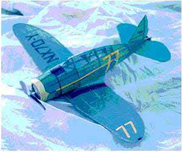

Lincoln Ross, offers up this beauty for our enjoyment. He writes, ...
"Here is a picture of my Seversky S2 Racer, modified from the Seversky Fighter kit from Golden Age Reproductions. Very fun kit, though you do have to cut out all the pieces. I reinforced the nose as a result of my trimming sessions. It has a touch more dihedral than shown, and a bigger horizontal stab. The rudder is hinged for spiral stability, but that makes it hard to get a steady circle. Also, I lowered the canopy to match the racer. A nice outdoor flyer, and my first really successful flying scale model.
Copyright 1998, Thayer Syme. All rights reserved